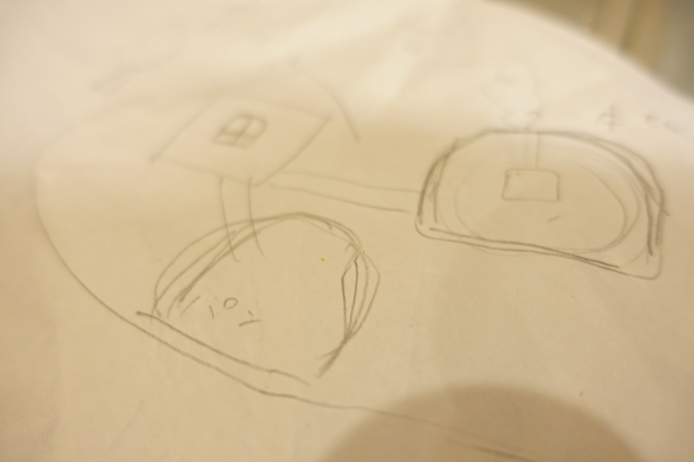

| 「私に、時間をください」と、妻は言った。: プロブロガーの妻が考えていること。 (イケハヤ書房) | |
| イケダ ハヤト | |
| (2016) | |
イケダハヤト
こんにちは、イケダハヤトです。
本書はnoteマガジンで連載した「妻との対談」をひとまとめにしたものです。ボリュームは2.5万字ほど。うちの妻、考え方がなかなか面白いので、楽しんでいただけることでしょう。
前置きはサクッと終えて、本編をお楽しみください。
PM2:00。娘たちが寝ているんで、妻とのんびりお話です。
。。。。
イケダ：今日は読者からの質問がきておりまして。
ミキ：それは嬉しいね。
イケダ：「イケハヤさんご夫妻は、お子さんにどんな力を身につけてもらいたいと思っていますか？ 」という感じのご質問です。
ミキ：うん、ちょうどそういう話を考えてたよ。
イケダ：おぉ、どんな話でござるか？
ミキ：たとえば、「ごはんのあとに食器を流しまで運ぶ」とかを例に取っても、親が「片付けてね」「持ってって」と言ってしまった時点で、それが「義務」になっちゃう と思うんだよね。
イケダ：なるほど？
ミキ：はっくんを見ていても、「そのひとことを言わなければいいのに...... 」と思うことがあって。
イケダ：す、すみません。片付けしてほしいときとか、どうすればいいんだろうか。
ミキ：本来は、「食器を運べた」とか「洗い物で泡を流せた」というのは、「遊び」にできる ことでしょう。
イケダ：ほうほう。
ミキ：実際、チホは楽しそうに「やりたい」と言ったりすることがあるんだよね。「洗濯物をしまう」みたいな単なる家事でも。
でもそれを、私たちが「じゃあ、やってもらおう」と思って指示を出した瞬間に、それが娘のチホにとっては、「やらなければいけないもの」なってしまうんだよね。
イケダ：「遊び」になったはずのものが、「義務」になってしまう。
ミキ：そうそう。背負わされるものになる。
イケダ：たしかにねぇ。
ミキ：だから冒頭の質問については、「何をするにもせよ自分から楽しんで、自分からやりたいと思える気持ち 」を伸ばしてあげたらいいな、と。
イケダ：深いね。「言われたことをやるのではなく、やらなければいけないことも含めて、なんでも楽しめる力
」......とでも言えるかな。
ミキ：ほら、「よし、今日は宿題をやろう」と思っているのに、家に帰るなり親から「宿題やりなさい」と言われたら、いやじゃなかった？
イケダ：言われたことないなぁw
ミキ：そうなの？私、よく言われてたのよ。
まだそれを「やろう」とも「やらない」とも決めてない段階で、「やりなさい」と言われた瞬間に、「あぁ、やりたくないな」と思ってしまう。
イケダ：そのメカニズムはあるね。
ミキ：「やりなさい」と言われた瞬間に、頑なになってしまう。「チッ!!」 みたいな。
イケダ：反抗期w まぁ、宿題はやってもらわないと困るしねぇw
ミキ：いやでも、そりゃ、やるんだよ、わたしだって。宿題だから。
イケダ：たしかに、宿題は言われなくてもやるか。
ミキ：そうそう。言われる必要なんてないのに、「やりなさい」と指示されて、コントロールされている感じ？ひねくれてるかなかぁ。
イケダ：うちは放任主義だったから経験ないかなぁ。
ミキ：そうですか。
イケダ：親としては、「やりなさい」と言ってしまいがちだよね。
ミキ：言わなくてもいいことを、あれやって、これやって、と、提示してしまう。
イケダ：そうだねぇ。
ミキ：「やりなさい」と言われると、「やだ」と言いたくなるんだよ、人は。 知らないけど。チホとかそんな感じする。
イケダ：たしかに、その心理メカニズムはある。
ミキ：はっくんが「これやって」と言ったことが原因で、チホが「いやだ」と言っている瞬間がある気がしています。
イケダ：なるほど～。よく見ているね。
ミキ：うん。
イケダ：どうすりゃいいんだろうね、これ。
ミキ：うーん。
イケダ：難しくね？食べ終わった食器は持ってきほしいよね。洗い物してたら。
ミキ：それは私は......。
イケダ：うん。
ミキ：そのうち自分でやるようになるんじゃないかな、と思うんだけど。
イケダ：あぁ、特に親が言わなくてもね。なるほど、面白いね。長い目で見れば、そりゃそうかもしれない。
ミキ：たとえば「いただきます、と言いましょう」みたいな話も、わが家ではそんなに「いただきますって言いなさい」とは言ってないし。でも、チホは「いただきます」するよね。
イケダ：うん。たしかに指示を出した記憶はない。
ミキ：洗い物でも挨拶でも、親が普通にやっていると、「それはそういうもの」という習慣になっていくんじゃないかなぁ。そうなるといいなぁ、と思ってるけど。
イケダ：習慣づくりだね。
ミキ：習慣づくりに「やりなさい」はいらない。
イケダ：名言きた。この対談、いつも一回は名言があるね。
ミキ：もちろん、ことばかけが必要なときもあるけど、押し付けることばはいらないよね。
イケダ：こどもが自発的に楽しめるような、声がけか。皿洗いだったら「泡がすごい面白いよ」とか！
ミキ：「チホ～、お母さん、今あわあわしてるよ～」とか。
イケダ：ニヤニヤしながら走ってくるね、それ。
ミキ：チホって、「お米をとぐ」のはなぜかやりたがるじゃん。
イケダ：たしかに。泥遊び、水遊びの延長なんだろうね。
ミキ：そうそう、濡れたお米を手で触ったり。
イケダ：さっきもずっと米いじってたよ。枡に入れた米をサラサラと。
ミキ：まだ３歳だし、すべての家事を100%やってもらう必要はないよね。本人が好きな家事を自発的にやってもらったら、「できること」は自然と増えて、習慣になっていくんじゃないかな。
イケダ：なるほどねぇ。頭いいね、ほんと。
ミキ：チホって、お箸を持っていくのとかも好きで、勝手に持ってきてくれるじゃん。「別にお願いするわけじゃないけど、やりたいならやってもいいけど？ 」みたいなスタンスでやると、食いついてきたりするよね。
イケダ：そうだよなぁ。いずれにせよ「そのうちできるようになるよね」という諦めは大切だと思いました。
ミキ：というか、チホは「よくやってくれている」と思いますよ。
イケダ：ポジティブだね。......しかし、「言われた瞬間に義務になる」というのは目からウロコだね。
たしかに俺も、みちこからなんか指示出しされるとイラッと来ることあるわ。朝ごはん作ってて、布団の中から「味噌はそっちじゃない！」とかさ。
ミキ：そうだよね。
イケダ：ほら、そのうちできるようになるから、少しくらい味噌が違っても、見守っててよ。
ミキ：大人はどうなんだろ？見守っててたら、できるようになるのかな？
イケダ：なんかすみません。
とある日の、PM16:00。「ちょっと話があるんだけど」と、右手にココアを持った妻がやってきました。
。。。。
イケダ：なんですか、お話というのは。
ミキ：ぬふふふ。
イケダ：ぬふふじゃないよ。
ミキ：私に、時間をください。 そう思ったの。
イケダ：そうだね。うん、そりゃそうだ。
ミキ：いやね、「ゆっくりする時間 」が前はほしかったんだけど、今はそうじゃなくて...。
イケダ：ほうほう、面白いね。して、どんな時間がほしいのでござるか？
ミキ：私が稼げるようになるまでの、応援をしてほしいな、 と思ったんだ。
イケダ：おぉ、その通りだ。すばらしい。
ミキ：「こどもを保育園に入れて落ち着いてから...」と思っていたんだけど、なんかちょっと最近、耐えがたくなってきてしまって。
イケダ：そりゃねぇ。もう３年以上育児ばっかりだからね。仕事は楽しいしね。
ミキ：うん。これってこどもを産んだタイミングで女の人はみんな悩むことでもあると思うけど...。
たとえば、はっくんの知り合い、門田さんとかさ、もう働けるスキルというか、自分で組織を持ったあとに、こどもを産んでるわけでしょ。
イケダ：だね。あの人は若いころからNGOやってるね。
ミキ：私の周りでも、たとえば中島シネマ さんのところも家で３人育ててながら仕事をしているけれど、あの人も、もともと「料理研究家」としてスキルがあって、だからこどもがいても働けているわけで。
イケダ：うん。
ミキ：もちろん「育児しながら働く」のは大変なことだと思うけど。私の場合は、ただ会社勤めをしていただけで、特にナリワイを身につけずにきてしまって。
イケダ：サラリーマンの悲哀だね。
ミキ：「子育てしながら稼げる」という方法がないのかなぁ、と 。がっつり保育園に預けないと仕事ができない、というのは嫌なのよね。
イケダ：俺も嫌だねぇ。せっかく田舎にきたわけだし。
ミキ：そうそう。せっかく自由な働き方ができそうな下地、環境があるから、そういう方向でいきたいとは思ってるの。
「育児が落ち着いてから...」と思ってたら、いつまでたっても動き出せないじゃんと思って。
イケダ：名言だね。育児はたしかに落ち着かないよね。
ミキ：３人産みたいと思ったら果てしないじゃん。これは待ってることじゃないな、と思ったの。
イケダ：そりゃそうだね。20年くらいかかるねw
ミキ：でも、なんかこれをはっくんに言うのは申し訳ないと思ったのよ。時間があればあるだけ文章を書きたいんだと思っていて。
イケダ：うーん、まぁねぇ。書きたいのはたしかに。
ミキ：実際、はっくんが稼いでくれているのもあるし。
私のほうも、道筋たてて「こうしたいです！やらせてください！」みたいな何かがあるわけではないしね。だから言いにくかったんだけど。つまんないんだよね、最近。
イケダ：すばらしいことじゃないですか。現状がつまらない。チャンスですよ、それは。
ミキ：そう？
イケダ：なんかやりなよ。なにやるの？
ミキ：次の「てづくり市 」っていつなんだろ？（＊ 地元で行われる、誰でも気軽に出品できるマルシェ）
イケダ：まずは、そこから出してみるか。何出すの？パン？
ミキ：パンとクッキーかなぁ。
イケダ：ベタだけどいいね。コンセプトは？どんなパンとクッキー？
ミキ：うーん、こどもと一緒に作れたらいいな、と思っているけれど。簡単で身体にもいい、という。天然酵母を使ったり、油使わないで...コンセプトというほどではないけど。
イケダ：うん。あとはどうコンセプトを言語化するかだな。まぁ、それは私がプロなので、とりあえずは任せなさい。
ミキ：高知市に揚げドーナツを出店で出している人がいるじゃん。その人も娘がラッピングを手伝っているらしくて、そういうのいいな、と。
イケダ：家内制手工業。いいよね。
ミキ：なんかね、ダメな母親みたいなんだけど、娘のしたい遊びが面白くない んだよね。
イケダ：そりゃそうだw おままごとは面白くないよw
ミキ：そうだよね。でも、世の中のお母さんはそれをやってるじゃん。
イケダ：いやー、そんなことないでしょ。どんだけこどもが好きでも、ずっとこどもレベルの遊びはできないよ。無理だよ、無理。
ミキ：最近、「娘のしたい遊び」と「私のしたい遊び」の差がすごいあってさ...。おままごとをしていて、ぜんぜん笑えないときとかあって... 。
イケダ：そんなの俺だってぜんぜんつまらんわw
ミキ：でも、こどもはどこにも行けないし、せめて遊びを提供しないといけない気がしてしまって。だから、娘と仕事を一緒にしたいと思ってるの。
イケダ：おぉ？なるほど。一緒に仕事をする。これはけっこう新しい発想だよね。
ミキ：うん、そのスタイル。こどもと一緒に、遊ぶように働く。
イケダ：児童労働2.0！ これきたね。時代のキーワードだ！
...まぁでも、そういう話は昔はあたりまえだったわけですよ。昨日も集落の飲み会で話してたんだけどさ。
農家の息子は、忙しくなったら稲刈りをしなきゃいけない。忙しい時期は学校なんか行かないのが、普通だったわけで。この時代に「今日は収穫だから学校休みます」 というのは、かなりいいよね。不登校とかそういう次元じゃない。
ミキ：うん。とりあえず、私が仕事をつくっている間に、チホと遊んでほしいなぁ、と。産後はけっこうがんばってくれたじゃん。
イケダ：産後は時間を作ったね。
ミキ：でしょ。遊びに連れて行ってくれたり。
イケダ：また温泉行ってくるよ。チホも好きだし。
ミキ：はっくんもブログのネタになるしね。
イケダ：いいじゃん。それをどう組み合わせるかだよなぁ。家族、誰もが楽しくいられるように、ナリワイをつくる 。
ミキ：そうそう、それが目指したい姿だと思って。
イケダ：まぁ、とりあえずチホと温泉行くよ。俺も行きたいし。でも、温泉だったらあなたも行きたいんじゃない？
ミキ：まぁ、それは行きたいけど...。温泉は一緒にいけばいいんじゃない？
イケダ：一緒に行ったら仕事つくれないんじゃない？
ミキ：うーん。
イケダ：かといって、おれもチホと公園行っても面白くないしなぁ...。家で一緒に遊ぶのも微妙だし。やっぱり農業かな。
ミキ：そろそろ植えられるものが出てくるよね。
イケダ：ジャガイモがそろそろだね。でも、フィールドがもっと広くないとな。家の畑なんて一瞬で作業終わるしなぁ。ヘクタール規模の農場がほしい。
ミキ：そうかもね。
イケダ：あとは、加工品作りとか、DIYもいいだろうね。あ、おれもなんか発酵させたいんだけど、ほらそこにビンがたくさんあるし。
ミキ：何を発酵させるの？
イケダ：うーん、何を発酵させたい？
ミキ：目的が大事じゃないですか。
イケダ：「うまい酒がつくりたい」。
ミキ：そんなこと書いていいの？
イケダ：有料だし。角は立たない。
ミキ：あぁ、度数1%未満のお酒だよね。
イケダ：そうそう。それなら合法ということですから。やっぱりどぶろくかな。
ミキ：あれは低温でじっくりやると甘みが出るから、温度管理ができないとダメじゃない？
イケダ：そうか、じゃあ温度管理できる保温庫がほしいね。
ミキ：まぁそういうわけで、今までもたびたび「息抜きしてきなよ」と言ってくれてはいたけれど、どれもこれも継続的なものではなく、単発じゃないですか。
イケダ：たしかに。日々行う、ナリワイを持つのが重要だよね。
ミキ：仕事を日常に組み込んで、こどもと楽しむ。そういう生活スタイルにしていきたい、という要望でした 。
イケダ：家族全員、遊ぶように仕事をする。承りました。まぁ、とりあえずパンを極めるのがいいんじゃないかね。
ミキ：高いフードプロセッサーも買っちゃったし。
イケダ：あ、ついに買ったんだ。長かったね。楽しみだ。
AM11:00。風邪を引いている上の娘は爆睡。先月生まれた娘もぐーぐー寝ています。そんなわけで、妻と対談してみました。
。。。。
イケダ：わたしは、「お金の話」をしたかったんですよ。
ミキ：カネの話ですか。
イケダ：みちこ（妻の相性）って倹約家だよね。
ミキ：うーん...。けんやくかッ。
イケダ：変なポーズしないでいいよ。
ミキ：昔に比べるとだいぶ、ボタンを押すまでの時間が短くなった気がするけど。
イケダ：ネット通販のボタンね。
ミキ：あぁ、どうしよう、ココア飲みたいのにお腹いっぱいになっちゃったよ。
イケダ：まぁ、午後でいいんじゃないのかね。
（妻、座る）
ミキ：そんで？なんだっけ？
イケダ：お金の話。あんまりお金使ってないよね。
ミキ：そう？使ってるよ？けっこう使ってるよ！
イケダ：え、何に？
ミキ：小麦粉を大量に買ってしまった...。25kgくらい買ってるんだよ...。送料をタダにするためにね。
イケダ：パンになるんでしょ？食べ物はいいんじゃない？あと、最近なんか買った？
ミキ：本とか？
イケダ：発酵の本ね。それはいいでしょ。俺も読みたいし。ブログネタになるし。
ミキ：あと、パジャマ。知らなかったでしょ？こっそり買っちゃった。あと靴下。1,000円の靴下ってけっこう高くない？いつもは3足1,000円なのに...。
イケダ：珍しいね。なんで高いのにしたの？
ミキ：日本製の綿の靴下なんだけど...。パジャマを買うときに、送料をなくすためについでに買ってしまって...。
イケダ：あぁ、そういう罠にかかっているのか。
ミキ：あれ、やだよねぇ。きわどい値段に設定されてたりして。
ミキ：やっぱり、本だね。
イケダ：さっきも言ったよ。
ミキ：いや、贅沢しちゃって...。
イケダ：そんなに増えてる？
ミキ：ひとつきに、１、２、３...。４冊くらい買ってるよ。
イケダ：すくないなw
ミキ：けっこう、ためらいながら買ってるよ。
イケダ：別にそこはいいよw 本は投資でしょう。発酵の勉強して、パン屋でも開いてよ。
ミキ：すっごい先月お金使った気がしているんだけど...。
イケダ：いや、ほんと、本はいいよ。どんどん買ってほしいくらいです。
ミキ：ほら、昔は鶏胸肉しか食べてなかったじゃん。
イケダ：ワイズマート秋葉原店で、1kg250円。
ミキ：激安だね。
イケダ：ブラジル産だっけ。
ミキ：そこはガラリと変わったねぇ。
イケダ：いいことなんじゃない？健康にいいわけで。
ミキ：そうだね。体にいいことはお金をかけてもいいかな、って思うようになったね。
イケダ：変化だね。
ミキ：「生活水準を上げる」って、どういうことなんだろう。いい革張りソファーを買うとか、いいクルマを買うとか、豪邸に住むというイメージがあるけど...。
イケダ：あんまりピンとこないよねぇ。クルマはちょっと高いの買っちゃったけど。
ミキ：わがやの場合は、「食材」だよね。基礎的な調味料とか、高いものばかりじゃん。...それってすごい贅沢だよねぇ。
イケダ：それにしたって、安上がりでしょう。冷静に考えれば...毎月プラスで１万円もしないんじゃない？野菜とかそこら辺に生えてるし。
ミキ：野菜代と家賃が下がったと思えば、結果的に使っているお金は...。
イケダ：むしろ減ってるでしょ。高知市内から比べると、家賃が３万下がったわけで。
ミキ：そうだね、ここに暮らしてから、毎月３万円も贅沢はしてないね。東京と比べるともっと下がってるよね。
イケダ：しかも今は幼児もいるし、あんまりレジャーって感じもしないしねぇ。ディズニーランドとかも早いしなぁ。遠いし、疲れるし...。
イケダ：お金の使い道が実はあんまりないんだよね。もう、いっそ土地を買って発酵研究所を作るとか？
ミキ：そうそう、それはいいね。消費するより、生産する方が面白いよね。
イケダ：そういうお金は使いたいよね。「本山発酵研究所」とか作りたい。
ミキ：最近、わかったんだよ。なんで東京にいたときに、あんなにケチだったか。
イケダ：ふむ。
ミキ：いつも、お金を使うたびに「失敗した感」がつきまとってたんだよね。
イケダ：面白いね。
ミキ：すごいがんばって調べて、美味しいお店に休日に行って、でもなんか「こんだけ？」という感じだったり。量が少なかったり、総合的な満足度が低かったり。電車で疲れて、行列に並んで、臭い街を通るとか...。
イケダ：五反田とか新宿とか横浜とか、超臭いよね。
ミキ：お金使ったのに、結果的に疲労感が残る感じ。
イケダ：うんうん。
ミキ：それで、お金を使いたくなくなっていったんだよね。家で寝てるのがいいや、と。
イケダ：だから寝てたのか！
ミキ：うふふ。
イケダ：仰る通りですよね。金使って遊ぶのも疲れる。
ミキ：そう。消費するしかできないから、ほんと「消耗」してたな。
イケダ：うむ。
ミキ：それが、高知に来てから、お金を使うのが楽しいな、 と思うようになったのよ。
イケダ：大きな変化だ。
ミキ：「意味あることに、お金を使えている」感覚というか。作っている人の顔が見える、人間関係が狭いからかな？「知り合いが作っている文旦」なら、ちょっと高くてもいいや、と買ってしまうことが多いね。
イケダ：地元のものなら、100～200円高くても買うよね。知り合いが作ってるわけで。
ミキ：「応援したいから、買いたい」 という動機でモノを買うことが増えた気がする。
イケダ：うん。でもまぁ、それにしたって、数百円の話だしね。
ミキ：高知に来てから、お店とか食べにいってもどこも美味しいし、混んでないし、道中も景色がきれいで楽しい、直販所とかもあるし。楽しいよね。
イケダ：なるほどねぇ。なんかほしいものあるの？
ミキ：フードプロセッサー。
イケダ：買えばいいのに、さっさと。俺も使いたいし。
ミキ：３万近くするんだもん。
イケダ：大丈夫だよ、そのくらいは稼いでるし...。
ミキ：私が稼いでいるわけじゃないんだもん。いくら「これだけ稼いだ」って言われたって、経費もかかってるし...カメラを買うわ、給料も払うわ、お酒は買うわ...。どんどん抜けていってる気がして...。
イケダ：いや、それも大丈夫だって言ってるのに。
ミキ：こどもの学費でしょ。家を建てるお金でしょ。温泉掘りたいでしょ。いろいろしたいって言ってるでしょ。温泉なんかほったら一発でなくなるじゃん。借金地獄じゃん。
イケダ：まぁ、たしかにガチで温泉掘ったら貯金はなくなるよね。借金はしないと思うけど...。
ミキ：はっくんがお金に執着がなさすぎて、他人にバカスカ使うからさぁ。 いいんだけどさぁ...。だから守りに入っちゃうんだよね。
イケダ：いいバランスだね！
ミキ：はっくんが死んだときに、あわてたくないんだよね。お金のことで。
イケダ：生命保険、入ってるけど。
ミキ：すぐなくなっちゃうよ。そんなの。ほんとに、無頓着だよね。
イケダ：えぇ？お金、ちゃんと管理してるよ？
ミキ：え？把握してるの？わがやのお金、誰も管理してないと思ってるんだけど。
イケダ：してるよ！
とある日のPM10:30。クラッカーを食べてる妻に、経営の相談をしてみました。
。。。。
イケダ：お金の話を相談したいんだけど。
ミキ：え？めずらしいね。クラッカーが止まらないじゃないか。
イケダ：いいんじゃない、食べれば。授乳中だし。
ミキ：お金がどうしたの。
イケダ：端的にいうと、採用に悩んでるんだよね。
ミキ：アシスタントさん？何人いるんだっけ。
イケダ：そうそう。今６人かな。来月から一人増えるけど。
ミキ：なにもの？
イケダ：うーん、彼はなにものだろう？地域おこしやりたいんだってさ。
ミキ：ふーん。
イケダ：まぁ、高知市にとりあえず来てもらって、いろんな地域を見て、どこかにソフトランディングしてもらえばいいかな、と。
ミキ：毎月決まった額払うの？
イケダ：10万円だね。
ミキ：ふーん。６人だと、60万円じゃん。どうせもっと払ってるんでしょ？
イケダ：交通費とかはたまに出してあげるね。まぁ、でも、うち月商300万くらいあるから。
ミキ：盛ったでしょ。
イケダ：いやいや、盛ってなくて300万だよ。
ミキ：私のなかでは、あなたの「60万円」というのは少なく見積もっていて、「300万」というのは多く見積もっています。
イケダ：そんなこたあない。月商300万固いよ。
ミキ：ふーん。
イケダ：現状だと、サロン100万、note100万、バナー広告40万、連載15～20万、アフィリエイト40～50万。ほら、これで300万でしょ。
あとは細かく、講演収入とか、印税も入る上に、今月はnoteだけで200万超えてるし。１月、２月は、それぞれ月商で400万超えてるよ。
ミキ：ふーん、それはすごいね。
イケダ：そうなんだよ。これはもう、使わないと仕方ないなと思うわけで。
ミキ：うん。たしかにそうだね。
イケダ：とはいえ、やっぱり高知に来てもらうには、１～２年は面倒見てあげたい。１人あたり少なくとも300万はかかる。そうなると、躊躇するところもあってさ。あとひとり増やすかどうか、どうしようかなぁ......と。
ミキ：はっくんの場合はさ。
イケダ：はい。
ミキ：人と定期的に関わるのが苦手でしょ？面倒見続けるとか。
イケダ：勝手にやってほしいよね。
ミキ：だから、誰でもいいわけではないよね。
イケダ：その通りだね。
ミキ：最初の頃けんかしたよね。「何をしてもらっているかわからない人に何十万もあげている」 ように見えるって。
イケダ：まぁ、間違ってはない。俺も何しているかわからないからね、サトモトさんとか。でもまぁ、がんばってくれているみたい。なんか知らぬ間に沢マンに集合してるし。
イケダ：多少言い訳をすると、こういう採用のあり方って、高知じゃないとできないじゃん。
ミキ：高知じゃないとって？
イケダ：ほら、人件費が安いから。言ってみれば、ここは「10万で人が飼える」んだよ、すごいじゃん。で、「放牧」してると活躍してくれてるんだよね。
ミキ：うん。
イケダ：実際、矢野大地 とか超いいじゃん。このまま、空き家とかも見つけてくれそうだし。うちのブログのアクセスも、相当稼いでくれてるよ。月間５万PVは貢献してるんじゃないかな。
ミキ：大地さんは、その辺のことを理解して動いてくれているよね。「好意に甘える」という感じではなく、価値を返してくれようとしているよね。
イケダ：うんうん。とはいえ、別に返ってこなくてもいいと思うんですよ。
ミキ：そうですか。
イケダ：２年で300万くらい払って、何にもならなくても、本人が少しでも救われたり、何か能力が伸びれば、それでいいと思うんだよね。 「１～２年高知で暮らした」という経験は、その人のためになるはずだし。
ミキ：そうですか。
イケダ：うん。だからそれでいいのかな、とも。せっかくお金稼いでいるしさ、いいことに使いたいよね。別に誰かを救いたいわけではないんだけど、「可能性が広がる」ことをしてあげたいよね。
ミキ：ヒビノケイコさんにね、「うちの旦那が、ほいほい人にお金を使うんですよ」 と相談したんですよ。
イケダ：すみません。
ミキ：「何十万も払ってるのに、経理もやってもらってなくて。何に使ってるんだろう」 と愚痴ったら。
イケダ：はい。
ミキ：「彼はそういう役割なんじゃないの？」 と言ってて。
イケダ：いいね。さすがアーティストだ。
ミキ：わたしもさ、そうは思ってたんだけどさ、そうやって第三者の目で言ってもらえて、なんか納得できたというか。
イケダ：そりゃよかった。
ミキ：そうやって稼ぐのが上手い人がいて、ケイコさんは「政治的」といっていたけれど、パトロンみたいにお金を回していく人がいるというのは重要だという話をしていました。
イケダ：その通り。
ミキ：まぁ、でも。あんまり増やしすぎないほうがいいとは思うけどね。人の人生だし。
イケダ：そこは難しいね。キリが悪いから、今年は俺を含めて10人しようかな。
ミキ：なぜ？きりのいい数字にする必要あるの？
イケダ：それは裏を返すと、何をもって人数をどう決めるか、むずかしいんだよ。固定費が存在しないビジネスだし。
ミキ：いい人がいれば採用すればいいんじゃないの？
イケダ：まぁ、それはそうなんだろうけど......。あとひとり公募をしてもいいなぁ、と。はあちゅうさんと一緒にやってる有料サロンが、100万円くらいの臨時収入になりそうで、これを使いたいんだよね。
ミキ：うん。
イケダ：まずは「１年限定のブログ書生」という感じで公募するというのが面白いかな。
ミキ：何をやってもらうの？
イケダ：高知に来て、ブログを書いてもらう。基本はそれだけ。でも、ゆず園の経営引き継ぎとかもやってもらいたいね。
ミキ：うーん......ぼやーっと「ゆず園をやってもらいたいなぁ」と思っても、やってもらうことはないよね。指示出しをしないから。
募集をする際に「こんな仕事をしてもらいたいです」とは言ったほうがいいんじゃない。
イケダ：そうですね。「ゆずで年商100万くらい作ってね」くらい書いてもいいかもね。
ミキ：うん。
イケダ：わかりました。じゃあ募集しよう。
ミキ：え？なんで？動機がわからないんだけど。
イケダ：え？元に戻るね。
ミキ：実際、学資保険を払ったらなくなるじゃん。
イケダ：まぁ、ねぇ。
ミキ：土地と家も買うでしょ。ローンを組まずにやろうとしているんでしょ？
イケダ：でも、このペースなら「1,000万」なんて半年で溜まるじゃん。このままいけば。毎月200万円近く増えているから。でしょ？
ミキ：うん。そうだけど。
イケダ：これは感覚的な話だけど、使わないと増えないんだよ。お金って。 大地氏がいることで、今後収入は増えていく可能性は、リアルに増えてるわけで。合宿とか企画してくれてるしね。
これは俺のことばじゃないけど、「人を買う」のがもっとも合理的な買い物なんだよね。
ミキ：なるほど。
イケダ：公募するということ自体も面白いじゃん。ちょっとは話題になりそうでしょ。
ミキ：そうですか。
イケダ：うん。だからやったほうがいいかな、と。面白い人が来なければ、採用なしでいいんだしね。
ミキ：はっくんがいいならいいんじゃない。
イケダ：OKが出たぞ。
ミキ：でも、面倒臭いことをすべて後回しにしているけれど、公募する前に合同会社をつくってからにすれば？
イケダ：そうだね。じゃあやってよ。印鑑証明とれないんだよ。
ミキ：やるけど。
イケダ：お願いします。
ミキ：そうしないと、半年後も「そろそろ会社作らないとなぁ」とか言っている気がする。
イケダ：創設記念の公募をしよう。それがいいね。
ミキ：うん、いいんじゃない。珍しく相談してくれたね。
イケダ：あなたはわが社の幹部ですから。
平日の夜10時。夜食にカレーを食べながら、雑談しました。
。。。。
イケダ：よし、カレーできたし、雑談でも収録しよう。
ミキ：え？収録するの？
イケダ：雑談をね。さっき、なんか「話したいことがある」とか言ってたじゃん。
ミキ：......あぁ、あれ？アシスタントの矢野さんが「イケハヤさんは人の目を見て話せない 」と書いていたのが、面白いと思ったんだよね。
イケダ：これですね。失敬な！ほんとだけど！
彼も自分でも書いていますが、コミュ症なのか初対面の人とは絶対に目を見て話をしてくれないですね。
ミキ：このカレー......ひとくち食べたら、もっと食べたくなっちゃったじゃん...。食べ出すと、お腹いっぱいになっても食べたくなっちゃうんだよ。バカ。
イケダ：これ薬膳カレーだからね！食欲を刺戟するスパイスたち。
ミキ：うん。意外と美味しい。
イケダ：なかなかやるよね。レトルトパウチ系では最強かも。
ミキ：よくもまぁ、こんなにスパイスを入れて味がまとまったね。
イケダ：そこはさすが、「薬膳本舗ジャパン」が企画開発してるしね。ゆずの味はまったくしないけど。
ミキ：そうそう、大地さんが書いてるのを見て、長い間その事実を忘れてたんだよね。私の目は見てくれるじゃん。
イケダ：そうだね。
ミキ：思い返せば、初めて会ったときから、そういう感じだったよね。
イケダ：みちこにも？
ミキ：うん。目の動きが、視線があやしいというか。
イケダ：よく付き合ったね。
ミキ：「この人は、人の目を見るのが苦手なんだなぁ」と思ったよ。
イケダ：まぁ、実際苦手だからね。
ミキ：もう、かわいそうになってくるくらい。
イケダ：同情されてた！
ミキ：ほら、お客さんが遊びに来て、はっくんと私の３人とかでごはんを食べるじゃないですか。
でも、なぜかはっくんは、私を見ながら話していて。わたしに話しかけているわけじゃないのに。もしくはパソコンを見ているか、どっちかだよね。お客さんのほうは見ない。
イケダ：そうですね。これはもう、しょうがないんだよ。
ミキ：うん。見ると呪われるの？
イケダ：たぶん。
ミキ：大地さんは「最近目を見てくれるようになった」とか書いてたけど。
イケダ：ぜんぜん見てないよ。勘違いじゃない？
ミキ：あぁ、ほら。就活の面接でいうじゃん。「面接官のネクタイを見るといい」 だっけ？
イケダ：いや、ネクタイじゃないだろw それは下すぎるw
ミキ：あれ？「眉毛」？
イケダ：「鼻」だって。
ミキ：いや、やっぱり「ネクタイ」じゃない？それとも「口」？
イケダ：だから鼻だよ、鼻。まぁ、口はいいかもしれないけど、それも割と下じゃないか？
ミキ：そうか、眉毛だと「左を見るか右を見るか」で迷うよね。
イケダ：いや、それはどっちでもいいでしょ。眉毛全体を平等に見れば。
ミキ：......今、あなたの鼻を見て喋ってるけど、目合ってる感じする？
イケダ：するよ。俺も今、みちこの鼻見てるよ。
ミキ：えっ、そうなんだ。目が合ってる気がする！
イケダ：じゃあ、ちょっとネクタイの位置を見て話してよ。
ミキ：目合ってる感じする？
イケダ：全然しないw めっちゃ「首元」見られてるw
これは面白いな......俺も今、みちこのネクタイ部分見てるよ。
ミキ：ほんとだ！下すぎる！
イケダ：だいじょうぶ？就活の面接でやってなかった？
ミキ：いやさすがに、それはやってないと思うけど......。
イケダ：ずっと相手のネクタイを見て、受け答えしてたりして。
ミキ：だから落ちたのかな。
イケダ：まぁ、俺みたいな人、世の中にはいっぱいいるよ。
ミキ：そう？
イケダ：うん。俺の周り、みんなそんな感じな気がしている。
ミキ：でも、目を見るってたしかに難しいよね。私、一度目を合わせると、「外すタイミングがわからない」ことがあるんだよ。
イケダ：ほう。
ミキ：ほら、「人の目を見て話しなさい」と言われるじゃん。先生とかに。そういう刷り込みがあるから、人の目を見て話すのはできるんだけど。
イケダ：つーか、じっと見られてると、話してて疲れるよね。目力強い人とかいるじゃん。
ミキ：そう。だから、たまに視線を外すじゃん。でも、外すタイミングが難しくて。話しながら、「いつ外すか」のタイミングを考えているんです。
イケダ：まじで。そんなこと考えてるの？
ミキ：「あ、今、視線はずしすぎてしまっているかもしれない」 とか......。
イケダ：知らなかったw
ミキ：「あ、今、相手は『私、目を見られてすぎている』と思っているんじゃないか」 とか......。
イケダ：面倒だなw
ミキ：だから疲れるんだろうね。人と話すと、どっと疲れるのは、それだね。
イケダ：生きにくい。たいへんだね。
ミキ：そう考えると、目を見て話せない人と話す方が楽だよね。
ほら、山奥に住んでいるKさんも、目を見て話すのは苦手な感じするよね。はっくんとフィーリング合いそうな人って、ああいう人なんだろうなぁ、と。
イケダ：まぁ、みんながみんながそうじゃないけどね。たしかにKさんはラクかも。
ミキ：だから山奥に住んでるのかもね。「目を見て話せない人は山奥にいけ」。
イケダ：名言。そう思うよ。目を見る相手もいませんから、ここには。
ミキ：そうだね。夜に狸と目があうくらい。
イケダ：うん。別に、ここで暮らしているなら、コミュ障でも問題ない。
ミキ：ほら、昔、何かのイベントとかで「こいつパソコンばっかり見ていてどうしようもないやつだな」と言われてたじゃん。
イケダ：あぁ、よく言われるね。
ミキ：そのころは気にしてたんだけどさ。
イケダ：ご心配おかけしました。
ミキ：「目が合わせられない」というだけで、「礼儀がなってない」みたいに取られることもあるんだなぁ、と思ったよ。でも、しょうがないよね。
イケダ：しょうがないよね。
ミキ：まぁでも、大学生のときより人づきあいがよくなったよね。
イケダ：そう？今の方が悪いんじゃない？
ミキ：先輩から「飲み行こうよ」と言われて、ごく普通に「いや、行きません」とか返したり。
イケダ：行きたくなかったんだろうね。
ミキ：けっこうそういうシーンがあったよね。
イケダ：高いしね。飲み会。三次会くらいまで馬場で飲むと、下手すると8,000円くらいかかったりするじゃん。つーか、みちこだって人づきあいしないじゃん。
ミキ：そう？
イケダ：山奥にいるし。
ミキ：そうだね。友だちは増えてはいない......かな。でも友だちいるよ？
イケダ：何人くらい？
ミキ：そもそも、「友だち」って定義が難しいよね。
イケダ：その発言、すでにコミュ障っぽいね。
ミキ：「友だち」ってなんだろう。
イケダ：わからないよね。
ミキ：「結婚式に呼ぶ人」？
イケダ：ハードル高くね？
ミキ：そうだね、すごい少ないね。
イケダ：「断続的にでもいいから、近況の連絡を取り合っている人」 とか。
ミキ：連絡とってる人？１、２、３...15人くらい？
イケダ：ほう、15人くらい。少ないね。
ミキ：なんで人を「友だち少ないやつ」みたいに言うの。
イケダ：でもせいぜい20人くらいでしょ。一般論として多くはないんじゃね？
ミキ：あなたはどうなのよ。
イケダ：俺はいないよ。友だち。誰だろ？フェイスブックには5,000人くらいいる気がするけど。
ミキ：はっくんは常に仕事モードだよね。
イケダ：「取材」か「アドバイス」になっちゃうんだよね。まさに、こういう「雑談」ができる人はいないな。みちことチホ？
ミキ：雑談できる人、いるよ。私。
イケダ：まじで！すごいね。こういう話をとりとめもなく？そりゃ楽しいね。
ミキ：うん。
イケダ：友だちに恵まれてるね。
ミキ：うん、そうだね。楽しく雑談できるのは、５人くらいかな。
イケダ：それも少ない気がするけど、俺は０人だなぁ。......たぶん、「雑談欲求」がもう、満たされてるんだよ。だから友だちがいらない。
ミキ：そうね。それだよきっと。
イケダ：ブログとか、ネット上で雑談しているみたいなもんだしね。
ミキ：あぁ、なるほど。
イケダ：常にアウトプットしてるから、「雑談したい」と思うことがない。だから、友だちはいらない。整理されました。
ミキ：わたしはブログも書いてないし、日頃人とも話してないから、たまに他人と会いたくなる。話すのがどんどん苦手になっていくし......。
イケダ：そうなんだ。
ミキ：家族は簡単じゃん。話すの。うまく話せなくても「あぁ、話せなかったな」 と反省することもないし。
私は、人と話していて「うまく話せなかった感」が残るのが嫌で。話さない期間が長くなればなるほど、「思っていること」と「出てくることば」の差が気になってしょうがない。
イケダ：すごいな、その感覚。
ミキ：コミュ障みたいだね。
イケダ：タイプは違えど、我々はコミュ障なのです。
ミキ：でも私、人あたりはよく見られるよ？
イケダ：誰もいない山奥に住んでる時点で、あんまり説得力ないよね。
PM10:00。空き家の見学に行ったので、妻と購入について相談してみました。
。。。。
イケダ：ねぇ。
ミキ：なんかようかい？
イケダ：家をどうしようね。
ミキ：おいしいね。こういうの大好きなの。
イケダ：こりゃうまいね。お酒が効いてるね。ばあばが送ってくれたんでしょ？これチホ用？
ミキ：ううん。お酒入ってるし、私たち用じゃない？
イケダ：ありがたいね。
ミキ：うまー。こういう小さいケーキ、コンビニで売ってるじゃん。これが大好物だったの。
イケダ：知らなかった。いつ？
ミキ：受験の頃？ごほうびに買っていた気がする。
イケダ：女子高生っぽいね。
ミキ：もっと昔かもしれない。その起源は......。
イケダ：起源。
ミキ：自分で作ったんじゃないかな？小さい頃に。実家にラム酒漬けのフルーツがあってさ。おいしい～たまらん。うふ～。でも、作ってみると明らかにバターが多いから、知らない方がいいこともあるよね。これもバターがたっぷり入っているはずで、夜に食べちゃいけないんだよ、ほんとうはね。
ミキ：で、なんだっけ？
イケダ：家をどうしようか。見学してきたわけで。
ミキ：家ねぇ。どうしよう。
イケダ：買おうか。200万くらいだよ。土地と上物で、300万は出ないはず。
ミキ：うん。
イケダ：リフォームで300万も見ておけばいいんじゃないかな......。壁とか天井は自力でやればいいし。
ミキ：......なぜか、いろんな人が私のメガネにぶつかってくるんだけど......。チホがぶつかってきて、もう歪んで歪んで......。昨日もチホの検診中、病院の人が３回くらいメガネにぶつかってきて。なんでだろう。
イケダ：体質なんじゃない？メガネに人がぶつかりやすい体質。
ミキ：わたしは家よりメガネが買いたいよ。
イケダ：それは買えばいいと思う。
ミキ：すごい不快なんだよね、メガネにぶつかられると......。
イケダ：で、家はどうする？
ミキ：家？
イケダ：うん。早く本題に入ろうよ。
ミキ：うーん。ひっかかっているのは、国道沿いで騒音がありそうなのと......。
イケダ：まぁねぇ、それはね。
ミキ：国道沿いの「お試し住宅」で寝たら、もううるさすぎて。この家の静けさになれちゃっているから、眠れなかったんだよ。
イケダ：慣れじゃない？東京でもかなりうるさかったじゃん。
ミキ：あとは、洗濯を干すのに黒い汚れがつきそうで。
イケダ：そうだねぇ。こっちは空気はきれいだしね。室内干しになるんじゃない？
ミキ：あとは、あの家はバーベキューできないよね。
イケダ：それは仕方ないね。
ミキ：まぁでも、すごくいいお家だと思うし、直したら素敵になりそう。いい感じになりそうとは思います。
イケダ：いいじゃん。
ミキ：でも、「住みたい！」とは思わない。
イケダ：まぁ、長い目で見ればいいんじゃない？山奥の土地も買えそうだし、将来的にはそっちに移れば。
ミキ：うーん。
イケダ：街中の家だし、売却とか賃貸だってできるわけです。めっちゃマイナスになるわけはない。......また食べてる！
ミキ：ちょびっとだよ。やめてよ、撮るの。
イケダ：ディティールが大事なんだよ。
ミキ：あぁ、美味しい。バカ食いしたい。あれ？「爆食い」？
イケダ：どっちでもいいんじゃない？
ミキ：はっくんは何も動かず決めるけど、見積もりをしてもらってからがいいんじゃない？
イケダ：まぁね。明日藤川さんに会うし、聞いてみるか。ちょうどいいね。
ミキ：ちょうどよすぎるね。
イケダ：できればこっちの集落の人に頼みたいけどねぇ。
ミキ：まぁ、とりあえず見積もりを取ってみればいいんじゃない。
イケダ：そうしましょう。
ミキ：パン取ってくれる？
イケダ：えぇ、まだ食べるの？
ミキ：だって、ごはんが少なかったんだもん。
イケダ：パンといえば、パン屋にすれば？あの物件、二階がまるまる店舗にできるじゃん。
ミキ：お店とかにはいいよね。
イケダ：そうでしょ。あのスペース、なんでもできる。何がいいかな？発酵研究所？
ミキ：えぇ、それは山がいいんじゃない？
イケダ：菌的に？
ミキ：うん。やっぱり山の中の方が、いい菌が住み着くんじゃないかな。
イケダ：パン屋でいいじゃん。
ミキ：わたし、パン屋さんがやりたいわけじゃないの。たぶん。
イケダ：なるほど。接客が嫌なの？
ミキ：いや、まぁそれは嫌だけど......パン屋というか、家があってね。
イケダ：絵を描き出した！
ミキ：で、土嚢建築が気になっていてね。ぐるりと本に囲まれているの、そして暖炉があるの。
イケダ：ほうほう。
ミキ：頭のなかでイメージができちゃいました。あ、いや、うざい？今の言い方！
イケダ：い、いいんじゃない。
ミキ：ここらへんが森ね。で、パンを焼くところがあるの。

イケダ：店をやるなら、こういう場所がいいの？
ミキ：何が言いたいかというと、「パン屋がやりたい」というところから始まるのではなくて、「おいしいパンが焼ける人になりたい」ということと、「遊ぶように生活したい」ということと、「こどもたちともストレスを感じず楽しく暮らす」ということ。それができるような場所を作りたい。
イケダ：夢が大きいね。
ミキ：そう。そしたら畑も必要だね。あ、火・田みたいになっちゃった！なんで火へんなんだろ？火の田んぼ？
イケダ：なんでだろうね。調べておくよ。
注：ありました。焼き畑農業から来ているみたい→「畑」という漢字はなぜ「火」＋「田」なのですか？| Yahoo!知恵袋
イケダ：で、どうするの？
ミキ：何を話してたんだっけ。
イケダ：家だよ家。買う？
ミキ：見積もりを取ってもらって、それからだよ。決断は。
イケダ：はい。
ミキ：仮住まいにするにせよ、導入する設備とかもはっきりしておきたいし。
イケダ：まぁ、見積もりをよろしくおねがいします。
ミキ：「よろしく」じゃないよ。
イケダ：えぇ！やってよ。
ミキ：知ってる人でしょ？
イケダ：お願いだよ。藤川さんいい人だから大丈夫だよ。
ミキ：ふーん。まぁいいけど。
法務局に行ってきたのですが、なんと、妻が財布をコンビニのトイレに放置し、そのまま盗まれてしまったようです......。傷心の妻に話を伺いました。
。。。。
イケダ：お疲れ様です。無事に法人登記はできそうですね。
ミキ：うん。
イケダ：よかったよかった。心は穏やかになったかい。
ミキ：うん......。穏やか......。
イケダ：心中穏やかではない。
ミキ：いや、別にそんなことはないけど「戻ってくればいいな」と思っちゃって。それが心に残っているから気持ち悪いね。
イケダ：残心。
ミキ：お金は別にいいんだけど、その他いろいろなものが戻ってきたらいいのになぁ......と。
イケダ：そりゃそうだね。免許証とか再発行面倒だしねぇ......。この願望を振り払うのは難しい気がするね。実際、見つかる可能性はあるからね。
ミキ：「どこかにぽいっと捨てられて、明日あたり連絡がくるかもしれない」と思って、さっきから携帯が気になっちゃってる。
ミキ：でもまぁ、そんくらいだね。
イケダ：立ち直りが早いね。
ミキ：はっくんだったら、しつこいだろうね。
イケダ：うん。しつこいよ、俺は。ぐちぐちとダメージを引きずるよ。
ミキ：負の感情を撒き散らし続けるよね。そして社会に対して文句を言い続けるよね。その結果、財布を持たない男になったのか。
イケダ：そうです。いいことでしょう。財布を持たなければ、盗まれることも、なくなることもないのだ。
ミキ：カバンからお札が落ちて、5,000円札をカフェに置いてきたこともあるよね。
イケダ：２回くらいね。返ってきたしいいんじゃない？
ミキ：うーん、財布を持たない生活かぁ。
イケダ：合理的じゃない？
ミキ：汚いな。汚いよ。汚すぎるよ。カバンとかあらゆるところにジャラジャラ落ちてて......。クルマのなかも小銭がすべてのポケットに入ってるし、家の中にも小銭が落ちてて不快。
イケダ：宝探しみたいでいいじゃん。散らばってるのが「鳥のフン」とかだったら嫌だけど、お金じゃん。
ミキ：嫌だよ。
イケダ：すみません。
ミキ：財布はほしいよ。
イケダ：またなくすかもよ。
ミキ：そうだねぇ......。もっと派手な財布がいいのかも。
イケダ：派手？
ミキ：いや、ド派手な財布ならトイレを出るときに目に入ってただろうなって。忘れることが減りそうじゃん。
イケダ：それよりも、「盗んだらやばい」と思わせる財布にするといいんじゃない？
ミキ：「炭疽菌」とか「毒」とか書いておくとか？
イケダ：そうそう。何がいいかなぁ。
ミキ：やっぱり「菌」がいいんじゃない。「サルモネラ菌まみれ」とか......絶対違うなと思っても触りたくないよね。
イケダ：それはたしかに。触りたくないw
ミキ：実験してみたいね。なんだろう、もっとやばそうなもの......炭疽菌？
イケダ：「炭疽菌」はわからない人もいるんじゃない？また違う方向で、「持ち主がやばそう」な財布とか。ヤクザの名刺を入れておくとか......？
ミキ：名刺じゃ、財布を開けるまでわからないじゃん。
イケダ：急いで返しにくるんじゃない？
ミキ：逆に怖くて返せないでしょう。ヤクザがいるかもしれないじゃん。
イケダ：そうか。そうだね。難しいな。
ミキ：今回のは、「なるべくしてなった」ような気もするんだよね。
イケダ：ほう。
ミキ：チホが「おしっこ漏れる」と騒ぎ出して、たまたま男子トイレしか空いてなくて、あと少しで女子トイレが空くけど、仕方なく入ったんだよ。で、そのまま忘れてしまって、盗まれたみたい。
イケダ：そういう運命だったのかもね。
ミキ：トイレで「財布でよかった。こどもが誘拐されたんじゃなくてよかった」と想像してゾッとしたんだよね。
イケダ：すごいね、その一瞬の想像力。
ミキ：普段しない行動が何重にも重なって、盗まれてしまったという。男子トイレなんて入ったの、人生で初めてなのに......。でも、なんで財布盗んじゃったんだろうね。
イケダ：お金がなかったんだよ。
ミキ：そうかぁ。十分にあったらそんなことしないよね。
イケダ：困ってたんだよ、きっと。
ミキ：お金だけ取ってくれればよかったのに......。
イケダ：そりゃそうだね。
ミキ：「財布を取られた！」と思った瞬間に悪人のイメージを作ってしまったけど、そうやってお金がない人の姿をリアルに想像してみると、ちょっとマシになるね。
イケダ：まぁね。それが真実だよ。中学生とかじゃない？
ミキ：そうかぁ。
イケダ：プロファイリングすると面白いね。プロの犯行ではないよね。丸ごと持っていくのは。足が付きやすくなるし、財布捨てるの困るし。
ミキ：そうだね。
イケダ：ってことは素人の仕事だよ。なんか財布を見つけて、気が動転してしまったんだよね、多分。
ミキ：うん。なんかドキドキしてきちゃった。「もうちょっと早く戻って、トイレから出てきた挙動不審な人に声をかけていたら、どうなっていたかなぁ」と想像したらドキドキしてきたよ。
イケダ：いちいち想像力がすごいね。でもまぁ、盗んだ人と接触することは増えそうだね。今は「財布にチップを入れておくと、財布の場所がわかるデバイス」とかあるからね。
ミキ：それが付いてたら、盗んだ人はびっくりしてただろうなぁ。びっくりさせたかったなぁ。大きい音がなるんだっけ？
イケダ：ピンピンピン!!! みたいな。
ミキ：そしたらどうなるかなぁ、「うわぁぁぁぁ!!」みたいになるかな。ただの財布なのに爆発するんじゃないかと思ったり......？
イケダ：爆発するとは思わないだろ（笑）でもまぁ、びっくりしてすぐに捨てるだろうね。じゃあ買うか、MAMORIO 。
ミキ：えー。
イケダ：いやこれ、すごいんだって。財布に入れておくと、置き忘れたときにスマホに通知が来るんだよ。
ミキ：へー。いいね。
イケダ：そもそもモノはなくすからねぇ。それが盗まれることもあるし、仕方ないさ。
ミキ：クルマに戻って、うんちをもらしたイチエが、にこーって笑ったんだよね。そんで生きていればいいや、と思ったよ。
イケダ：そうだね。
ミキ：瑣末なことだよね。
イケダ：こうしてネタにできたしね。あ、noteのサポートで慰労金でも集める？
ミキ：いいよそんなの。それだったら地震で困ってる人にあげてほしいよ。
イケダ：そうだね。リンク貼っておくわ。
とある日のPM10:00。のんびり雑談しました。
ミキ：最近、炎上してたの？
イケダ：......ん？いや？知らないけど。
ミキ：ゆきさんにロゴを依頼したじゃん。
＊ 高知在住の筆文字クリエイター、ゆきさん にロゴを発注しています。妻の数少ない友人。
イケダ：うん。炎上してる感じで、「まだ東京で消耗してるの？」と書いてほしくてね。
ミキ：ゆきさんに「最近、炎上してないよね？」と言ったら、ゆきさんから「え？このあいだ燃えてたよ」と言われて。
イケダ：えっ、そうなの？
ミキ：えっ、そうなの？
イケダ：知らなかった。
ミキ：本人も知らないところで炎上してるんだね。ほんとに炎上してないの？最近。
イケダ：してないんじゃないかな。少なくとも自覚はないね。
ミキ：ふーん。
イケダ：そう！このやり取り、よくあるんだよ。打ち合わせの相手から「先週炎上してましたよね」とか言われて、俺がきょとんとする、みたいな。
ミキ：なんのことだかわからないの？
イケダ：うん。
ミキ：だいぶ鈍くなってるんだね。
イケダ：まぁ、反応をみてないからね。そんなものだよ。
ミキ：はっくん自体は、別に炎上したいわけじゃないんでしょ？
イケダ：色々な気分とか都合で狙うことはあるけど......趣味みたいなもんだよね。炎上は。暇なときに燃やしてみたくなる感じかなぁ。
ミキ：なんか、いっとき「炎上王子」とか言われてなかった？
イケダ：今もじゃない？ツイッターでたまに言われる気がする。
ミキ：山に来てから、そういう話が耳に入ってこない。
イケダ：山の隔離能力、すごいね。
ミキ：なんかもう、「旦那が炎上している」というのは過去の話になってたんだよね。
イケダ：炎上芸人的な芸風は、まだ捨ててないよ。
ミキ：そうなんだ。
イケダ：やっぱり、それができる人が少ないんだよね。俺以外だとはあちゅうさんくらい？彼女はかなり人の心をえぐるようなことを書けるけど、他には思いつかないなぁ。
ミキ：へー。
イケダ：実名で燃やせる人は、多くないのですよ。だから、役割として残しておこうかな、と。
ミキ：そういえば最近、はっくんの書いている文章を読んでない気がする。
イケダ：有料化してるからね。
ミキ：そうか！
イケダ：うん。やってることはそんなに変わってないけどね。対談とか増やしてるから、それは面白いと思うよ。読めば？
ミキ：対談は面白そうだね。はっくんの記事は、別にいいけど。
イケダ：まぁ、俺の記事はね。ここにいるし。
有料マガジンのおかげで、作りやすくなったのがよくて。電子書籍にもできるし。ナカガワさんががんばって電子化してくれていて、助かってるよ。
ミキ：そりゃあすごい。対談って、読んでいても面白いよね。
イケダ：登場人物が増えると、開ける感じがするよね。
ミキ：あたらしいものが生まれる感じが面白いよね。
イケダ：ひとりでつくるのは、限界があるんだよね。なんでもそうだけど。
ミキ：なんでもそうか。
イケダ：あなたが作るパンもそうでしょ。突き詰めていくと、どっかでコラボとか、別の要素を入れたくなるはずで。中島シネマさんとコラボするとかね。
ミキ：極めていくとそうなるんだろうね。
ミキ：はっくんはあんまり人に影響を受けなそうな感じがするけど、すごい人と話すと変わるの？
イケダ：変わるよそりゃ。小野美由紀さん、ケイコさんの話は面白かったね。読めば？
ミキ：どうやったら読めるの？課金の仕組みがいまいちわからなくて、一回も使ったことがない。クレカ？
イケダ：クレカ必要だね。そういう人は多いんだろうなぁ。
ミキ：そうだろうね。
イケダ：なんにせよ、こちらも影響を受けるような人と話さないと、対談にはならんよね。こっちから一方的に話すだけなら、ブログでいいわけだし。
ミキ：影響を与えあうわけですね。
イケダ：そうそう。それが「面白さ」になると思うんだよ、読む人にとっても。一流の人が「へー！」と頷きあうものって、絶対面白いよね。どんな分野でも。
ミキ：そうだね。
イケダ：それがコンテンツのポイントだと思うんだよ。
ミキ：これからのコンテンツのポイントは、そこだすか。
イケダ：なぜ、なまるんだすか。
ミキ：うふふ（笑）
イケダ：「イケハヤメディアラボ」を作ったわけだけど、「研究所」というコンセプトは、だから面白いんだよ。一流の人たちが真剣に語り合う空間。お互いがうなずきあって、新しいことを生み出す空間。
ミキ：ちょっとまって！今真剣にお米を炊く準備をしているから。
イケダ：あ、そう。
ミキ：やっぱりお米は、真剣に炊いたほうが美味しいんだよ。
イケダ：精神論きた。がんばってください。
法人設立を終えて帰宅。帰り道は妻が運転したので爆睡。PM10:30頃に起きて、もそもそと夜食を食べていたので雑談しました。
。。。。
イケダ：なんか食べてるね、さっきから。
ミキ：いや、お腹が空いちゃって。お寿司何皿くらい食べたのかな？
イケダ：会計では23皿だったね。
ミキ：ひとり何個？
イケダ：一皿２貫だから、20個くらい？
ミキ：ほんとに!? 私たちはそんなに酢飯の塊を食べてたの？
イケダ：シャリね。計算上は、20個は食べてるよね。
ミキ：それにしては、なんて物足りなさ。やっぱだめだよね、野菜がないと。
イケダ：そうなの？野菜はむしろお腹膨らまないんじゃ......。
ミキ：いや、こんな時間だからお腹空くのかな？運転して疲れたからか！
イケダ：今日はだいぶ運転してくれたね。帰り道45kmくらいあるよ。
ミキ：いつもありがとう。
イケダ：そうだね。
ミキ：横でぐーぐー寝ててごめんね。
イケダ：うん。
ミキ：でも、あれでも気を使って寝てるんだけどね。
イケダ：いいよ別に。どうせ寝るなら、がっつり寝ればいいのに。
ミキ：「申し訳ない」と思いながら、かっくんかっくんしてるよ。
イケダ：しかし、いつも夜食を食べてるね。
ミキ：今日は酒粕豚汁の残りと、甘酒ヨーグルトで締めようと思ったんだけど......。
イケダ：なに、そんなに食べてたのか！
ミキ：あ、トマトも最初食べたよ。
イケダ：ずっと台所にいると思ったら。
ミキ：でも足りないから海苔おにぎり食べてるの。
イケダ：もはや普通に一食分食べてるよね。一日４食。
ミキ：授乳してるからね。11時くらいになるとお腹すくんだよ。
イケダ：まぁねぇ。
ミキ：どのくらいカロリーを消費するかというと......。
イケダ：おもむろに検索を始めたね。
ミキ：プールで１時間泳いだのと同じくらいだって！
イケダ：そりゃお腹空くね。たいへんだ。
ミキ：800～1,000kcalだって。だからかぁ、なるほど。
イケダ：納得したね。いっぱい食べられていいね。4回もごはんがあっていいね。
ミキ：お米が美味しいなぁ。チホが炊いたお米。
イケダ：米が炊ける３歳児。米どころで育っているだけはあるね。これは品種は「にこまる」だっけ。
ミキ：にこまるだよ。にこまる美味しいよね。
イケダ：香りと味、食感もバランスがいい。
ミキ：どうやっても美味しく炊けるのは、直販所に売ってる大石の棚田米？
イケダ：大石（＊ ぼくらが住んでるエリア）のは直販では売ってないよ。吉延（＊ 川を挟んで向かいのエリア）じゃない？
ミキ：ここら辺の人は、みんな自分で消費してるってこと？
イケダ：それもあるのと、JAに出してるんだろうね。直販マーケットに出すほど作ってないんでしょう。
ミキ：次は......。
イケダ：まだ食べるの!? それはすごいね。
ミキ：今のちっちゃかったんだよ。次は塩おにぎり。
イケダ：塩。シンプルにいくね。
ミキ：うん。それで締める！（鍋を覗きながら）......すごい微妙な量だなぁ。
イケダ：余しても困るし、全部食べれば？
ミキ：そうだね。食べよう。
イケダ：800～1,000kcal消費するんだったら大丈夫だよ。
ミキ：そうだね！
イケダ：しかし、どうせならもっと夜食にこだわればいいじゃん。
ミキ：常にこだわってるよ。
イケダ：そうでしたか。
ミキ：うん、常に。「自分のお腹が一番求めているものは何か？」と考えながら生きているよ。
イケダ：哲学者だね。
ミキ：食べるの大好きだけど、余分なものを体に入れるのは好きじゃないの。
イケダ：余分なものって？
ミキ：なんていうの、過剰に？塩とか砂糖とか油とか取りたくないよね。
イケダ：たしかに、気分はよくないよね。
ミキ：食べてよかったなぁ、と思えるものを食べるのが好きなの。「食後感」？
イケダ：食後感か、なるほど。さすが、新しい言葉を生み出すね。
ミキ：「食後感のいい食事」をお腹さんと会話しながら考えているんだよ。
イケダ：ご飯のわりに、海苔おおいね。
ミキ：ぜいたくにね。......やめてよ、写真。お腹とか写ってない？
イケダ：いや、大丈夫だけど......。それ、太っているみたいに聞こえるね。太っているように思われてるんじゃない？体重も隠しているし。
ミキ：それは隠すよ。
イケダ：なんか見てたら、お腹すいてきたな。
ミキ：大丈夫だよ、はっくんは授乳してないし。
イケダ：うーん。
ミキ：ビールも飲んだし。
イケダ：とろ～んとしたみりんドリンクとか飲みたいね。
ミキ：つくってあげようか？
イケダ：えっ!? 優しくね？どうしたの？珍しい......。
ミキ：はっくん、葛湯作ろうとして失敗してたでしょ？
イケダ：全然だめだったね。つくってくれるの？
ミキ：欲張って多くつくると失敗するんだよ。作ってあげるよ。
。。。。
というわけで、めちゃんこうまい葛湯を作ってくれました。本格みりんが入った大人向けカクテル。わが妻ながら、いちいち作るもののレベルが高い......。
ブロガーという仕事は割と「キツい」ところがあって、なにかというと、メンタルをやられるんですよ。
ほら、昔の小説家って、軒並み自殺しているじゃないですか。あれ、よくわかるんです。ぼくも独りでやっていたら、冗談とかではなく、自殺していそうです。それか犯罪者になってますね。いや、ほんとうに！
お読みの通り、うちの妻は実に聡明で、うちに秘めたるものが超面白い。デジタルメディアとかまったく詳しくない割に話に付いてくるのもいいですね。
有料マガジンの方では、今後も定期的に妻コンテンツを配信していきます。また2.5万字分くらい溜まったら、続編としてまとめようと思います。月額500円でたっぷり読めますので、関心がある方はぜひnoteのマガジンでご購読ください！